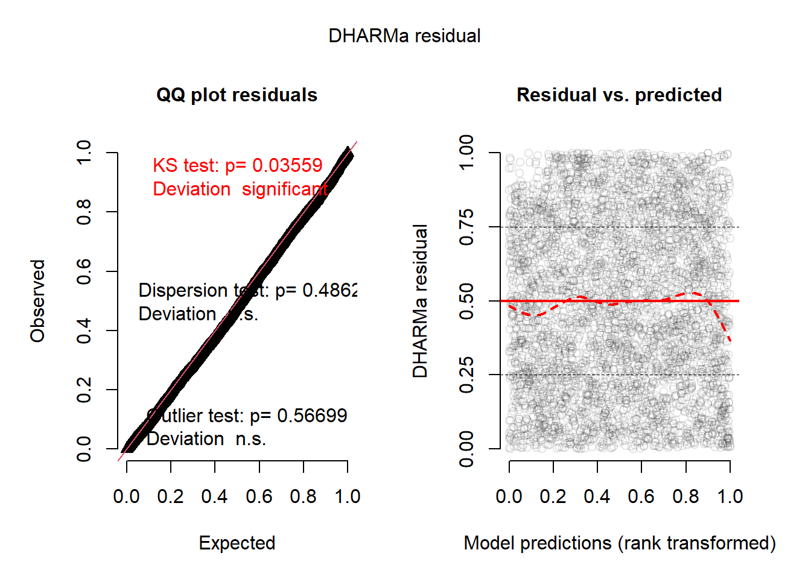
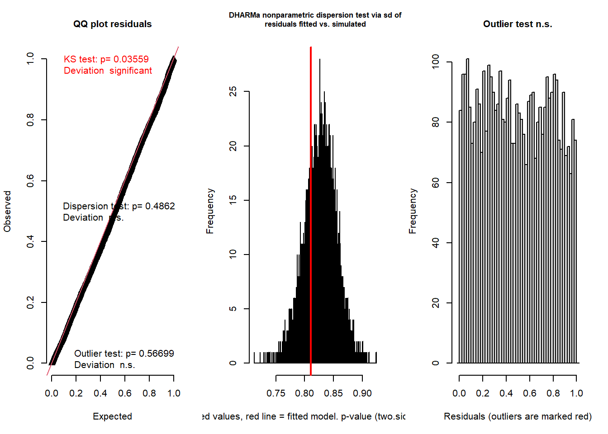
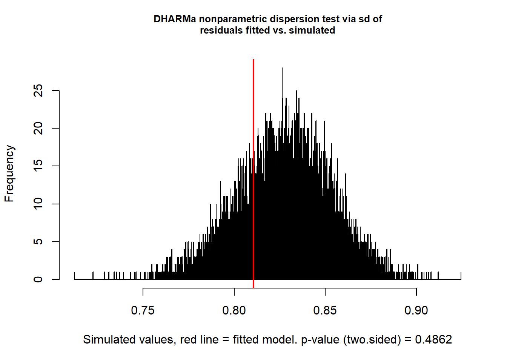
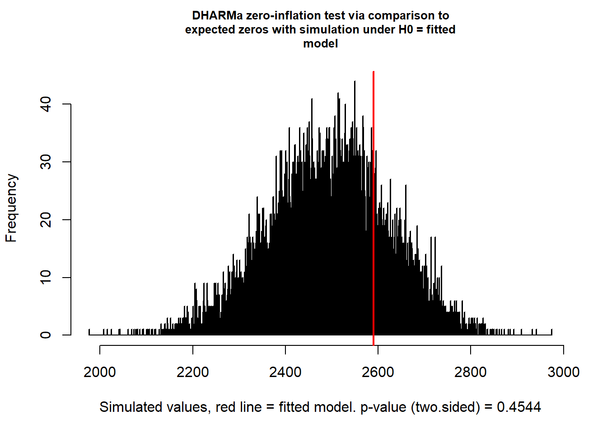

# neue Packages: DHARMa, car, MASS, ROCR, sjPlot, sjstats, ggeffects, cowplot, gstat
ipak <- function(pkg){
new.pkg <- pkg[!(pkg %in% installed.packages()[, "Package"])]
if (length(new.pkg))
install.packages(new.pkg, repos = "http://cran.us.r-project.org", dependencies = TRUE)
sapply(pkg, require, character.only = TRUE)
}
packages <- c("lme4", "bbmle", "MuMIn", "tidyverse", "DHARMa", "car", "MASS", "ROCR",
"sjPlot", "ggeffects", "sjstats", "cowplot", "magrittr", "gstat")
ipak(packages)6. Modellgüte und -diagnostics MM / Habitatselektionsmodell - Lösung
Libraries laden
Neue packages die wir für die Modelle und die Diagnostics brauchen
Ausgangslage
- Der Modellfit von letzter Woche als Ausgangspunkt für die heutige Übung
# | results: hide
DF_mod_day <- read_delim("fallstudie_n/data/Aufgabe4_Datensatz_Habitatnutzung_Modelle_20221031_moodle.csv",
delim = ";") %>%
filter(time_of_day == "day") %>%
mutate(slope_scaled = scale(slope), us_scaled = scale(us), os_scaled = scale(os),
forest_prop_scaled = scale(forest_prop), dist_road_all_scaled = scale(dist_road_all),
dist_road_only_scaled = scale(dist_road_only), dist_build_scaled = scale(dist_build),
id = as.factor(id))
f <- pres_abs ~ slope_scaled + us_scaled + os_scaled + forest_prop_scaled + dist_road_only_scaled +
dist_build_scaled
f <- paste(c(f, "+ (1 | id)"), collapse = " ") %>%
as.formula()
m_day <- glmer(f, data = DF_mod_day, family = binomial, na.action = "na.fail")
all_m <- dredge(m_day)
avgmodel <- model.avg(all_m, rank = "AICc", subset = delta < 2)
summary(avgmodel)
Call:
model.avg(object = get.models(object = all_m, subset = delta <
2), rank = "AICc")
Component model call:
glmer(formula = pres_abs ~ <3 unique rhs>, data = DF_mod_day, family =
binomial, na.action = na.fail)
Component models:
df logLik AICc delta weight
12356 7 -2337.01 4688.05 0.00 0.48
123456 8 -2336.48 4689.00 0.95 0.30
2356 6 -2338.78 4689.58 1.53 0.22
Term codes:
dist_build_scaled dist_road_only_scaled forest_prop_scaled
1 2 3
os_scaled slope_scaled us_scaled
4 5 6
Model-averaged coefficients:
(full average)
Estimate Std. Error Adjusted SE z value Pr(>|z|)
(Intercept) -0.49073 0.14774 0.14778 3.321 0.000898 ***
dist_build_scaled -0.07877 0.06433 0.06434 1.224 0.220856
dist_road_only_scaled 0.44281 0.04792 0.04793 9.239 < 2e-16 ***
forest_prop_scaled 0.83786 0.06487 0.06489 12.912 < 2e-16 ***
slope_scaled -0.13548 0.04973 0.04975 2.723 0.006463 **
us_scaled 0.40130 0.04101 0.04102 9.784 < 2e-16 ***
os_scaled 0.01927 0.04529 0.04530 0.425 0.670597
(conditional average)
Estimate Std. Error Adjusted SE z value Pr(>|z|)
(Intercept) -0.49073 0.14774 0.14778 3.321 0.000898 ***
dist_build_scaled -0.10139 0.05508 0.05510 1.840 0.065755 .
dist_road_only_scaled 0.44281 0.04792 0.04793 9.239 < 2e-16 ***
forest_prop_scaled 0.83786 0.06487 0.06489 12.912 < 2e-16 ***
slope_scaled -0.13548 0.04973 0.04975 2.723 0.006463 **
us_scaled 0.40130 0.04101 0.04102 9.784 < 2e-16 ***
os_scaled 0.06466 0.06284 0.06286 1.029 0.303615
---
Signif. codes: 0 '***' 0.001 '**' 0.01 '*' 0.05 '.' 0.1 ' ' 1- Die Modellresultate aus dem avgmodel sind grundätzlich die finalen Resultate die bereits interpretiert werden könnten. Allerdings funktionieren die Diagnosetests und die Darstellung der Resultate mit diesem gemittelten Modell nicht sehr gut, weshalb wir einen re-fit mit glmer machen müssen (an den Resultaten ändert sich dadurch nichts)
# hier noch zum Vergleich, dass die Resulate sich nur marginal verändern
summary(m_day)Generalized linear mixed model fit by maximum likelihood (Laplace
Approximation) [glmerMod]
Family: binomial ( logit )
Formula:
pres_abs ~ slope_scaled + us_scaled + os_scaled + forest_prop_scaled +
dist_road_only_scaled + dist_build_scaled + (1 | id)
Data: DF_mod_day
AIC BIC logLik deviance df.resid
4689.0 4739.7 -2336.5 4673.0 4177
Scaled residuals:
Min 1Q Median 3Q Max
-7.2055 -0.6829 -0.3699 0.8412 4.2787
Random effects:
Groups Name Variance Std.Dev.
id (Intercept) 0.2449 0.4948
Number of obs: 4185, groups: id, 12
Fixed effects:
Estimate Std. Error z value Pr(>|z|)
(Intercept) -0.49246 0.14868 -3.312 0.000926 ***
slope_scaled -0.14705 0.05094 -2.887 0.003893 **
us_scaled 0.39206 0.04163 9.418 < 2e-16 ***
os_scaled 0.06466 0.06284 1.029 0.303495
forest_prop_scaled 0.82086 0.07051 11.641 < 2e-16 ***
dist_road_only_scaled 0.44901 0.04733 9.487 < 2e-16 ***
dist_build_scaled -0.09854 0.05516 -1.786 0.074042 .
---
Signif. codes: 0 '***' 0.001 '**' 0.01 '*' 0.05 '.' 0.1 ' ' 1
Correlation of Fixed Effects:
(Intr) slp_sc us_scl os_scl frst__ dst___
slope_scald 0.032
us_scaled 0.003 -0.136
os_scaled -0.001 -0.312 -0.276
frst_prp_sc -0.064 -0.081 0.064 -0.573
dst_rd_nly_ -0.016 -0.227 0.024 0.041 0.167
dst_bld_scl 0.029 -0.019 0.020 0.081 -0.471 -0.244# https://stats.stackexchange.com/questions/153611/interpreting-random-effect-variance-in-glmer
# 95% range of the roe deer effects is approximately: -0.97 - 0.97Aufgabe 1
Berechung der AUC (area under the receiver operating characteristic curve)= Mass der Modellgüte
Für die Berechnung des AUC findet ihr weiterführende Informationen unter: Link
prob <- predict(m_day,type=c("response"))
pred <- prediction(prob, DF_mod_day$pres_abs)
# AUC
auc <- performance(pred, measure = "auc")@y.values[[1]]
auc[1] 0.7769202Aufgabe 2
Interpretieren der Modell-Residuen mittels Tests auf verschiedene Aspekte
- Model testing for over/underdispersion, zeroinflation and spatial autocorrelation following the DHARMa package.
- unbedingt die Vignette des DHARMa-Package konsultieren: Link
# Residuals werden über eine Simulation auf eine Standard-Skala transformiert und
# können anschliessend getestet werden. Dabei kann die Anzahl Simulationen eingestellt
# werden (dauert je nach dem sehr lange)
simulationOutput <- simulateResiduals(fittedModel = m_day, n = 10000)
# plotting and testing scaled residuals
plot(simulationOutput)
testResiduals(simulationOutput)
$uniformity
Asymptotic one-sample Kolmogorov-Smirnov test
data: simulationOutput$scaledResiduals
D = 0.02194, p-value = 0.03559
alternative hypothesis: two-sided
$dispersion
DHARMa nonparametric dispersion test via sd of residuals fitted vs.
simulated
data: simulationOutput
dispersion = 0.9797, p-value = 0.4862
alternative hypothesis: two.sided
$outliers
DHARMa outlier test based on exact binomial test with approximate
expectations
data: simulationOutput
outliers at both margin(s) = 1, observations = 4185, p-value = 0.567
alternative hypothesis: true probability of success is not equal to 0.00019998
95 percent confidence interval:
6.049637e-06 1.330610e-03
sample estimates:
frequency of outliers (expected: 0.0001999800019998 )
0.0002389486 $uniformity
Asymptotic one-sample Kolmogorov-Smirnov test
data: simulationOutput$scaledResiduals
D = 0.02194, p-value = 0.03559
alternative hypothesis: two-sided
$dispersion
DHARMa nonparametric dispersion test via sd of residuals fitted vs.
simulated
data: simulationOutput
dispersion = 0.9797, p-value = 0.4862
alternative hypothesis: two.sided
$outliers
DHARMa outlier test based on exact binomial test with approximate
expectations
data: simulationOutput
outliers at both margin(s) = 1, observations = 4185, p-value = 0.567
alternative hypothesis: true probability of success is not equal to 0.00019998
95 percent confidence interval:
6.049637e-06 1.330610e-03
sample estimates:
frequency of outliers (expected: 0.0001999800019998 )
0.0002389486 # The most common concern for GLMMs is overdispersion, underdispersion and
# zero-inflation.
# separate test for dispersion
testDispersion(simulationOutput)
DHARMa nonparametric dispersion test via sd of residuals fitted vs.
simulated
data: simulationOutput
dispersion = 0.9797, p-value = 0.4862
alternative hypothesis: two.sided# test for Zeroinflation
testZeroInflation(simulationOutput)
DHARMa zero-inflation test via comparison to expected zeros with
simulation under H0 = fitted model
data: simulationOutput
ratioObsSim = 1.0388, p-value = 0.4544
alternative hypothesis: two.sided# test for spatial Autocorrelation
# calculating x, y positions per group
groupLocations = aggregate(DF_mod_day[, 3:4], list(DF_mod_day$x, DF_mod_day$y), mean)
groupLocations$group <- paste(groupLocations$Group.1,groupLocations$Group.2)
# calculating residuals per group
res2 = recalculateResiduals(simulationOutput, group = groupLocations$group)
# running the spatial test on grouped residuals
testSpatialAutocorrelation(res2, groupLocations$x, groupLocations$y, plot = F)
DHARMa Moran's I test for distance-based autocorrelation
data: res2
observed = 0.0149475, expected = -0.0002661, sd = 0.0010081, p-value <
2.2e-16
alternative hypothesis: Distance-based autocorrelation# Testen auf Multicollinearität (dh zu starke Korrelationen im finalen Modell, zB falls
# auf Grund der ökologischen Plausibilität stark korrelierte Variablen im Modell)
# use VIF values: if values less then 5 is ok (sometimes > 10), if mean of VIF values
# not substantially greater than 1 (say 5), no need to worry.
car::vif(m_day) slope_scaled us_scaled os_scaled
1.500131 1.219237 2.455749
forest_prop_scaled dist_road_only_scaled dist_build_scaled
2.542469 1.129679 1.508604 mean(car::vif(m_day))[1] 1.725978Aufgabe 4
Ermittlung des individuellen Beitrags der einzelen Variablen im Gesamtmodell
- Bestimmen delta AIC nach Coppes et al. 2017 -> Vergleich des Gesamtmodells gegenüber einem Modell ohne die entsprechende Variable.
- Auftrag auf den 22.11.2021: Jede Gruppe kurze Vorstellung der Modellresultate & Diagnostics im Plenum und Diskussion der Ergebnisse (keine PP-Präsentation nötig)
m_os <- glmer(pres_abs ~
dist_build_scaled +
dist_road_only_scaled +
forest_prop_scaled +
slope_scaled +
us_scaled +
(1|id), data= DF_mod_day, family = binomial, na.action = "na.fail")
m_us <- glmer(pres_abs ~
dist_build_scaled +
dist_road_only_scaled +
forest_prop_scaled +
slope_scaled +
os_scaled +
(1|id), data= DF_mod_day, family = binomial, na.action = "na.fail")
m_road <- glmer(pres_abs ~
dist_build_scaled +
forest_prop_scaled +
slope_scaled +
us_scaled +
os_scaled +
(1|id), data= DF_mod_day, family = binomial, na.action = "na.fail")
m_forest <- glmer(pres_abs ~
dist_build_scaled +
dist_road_only_scaled +
slope_scaled +
us_scaled +
os_scaled +
(1|id), data= DF_mod_day, family = binomial, na.action = "na.fail")
m_build <- glmer(pres_abs ~
dist_build_scaled +
dist_road_only_scaled +
forest_prop_scaled +
slope_scaled +
us_scaled +
os_scaled +
(1|id), data= DF_mod_day, family = binomial, na.action = "na.fail")
m_slope <- glmer(pres_abs ~
dist_build_scaled +
dist_road_only_scaled +
forest_prop_scaled +
us_scaled +
os_scaled +
(1|id), data= DF_mod_day, family = binomial, na.action = "na.fail")
bbmle::AICtab(m_day, m_os, m_us, m_road, m_forest, m_build, m_slope) dAIC df
m_os 0.0 7
m_day 0.9 8
m_build 0.9 8
m_slope 7.3 7
m_us 92.2 7
m_road 94.3 7
m_forest 141.9 7